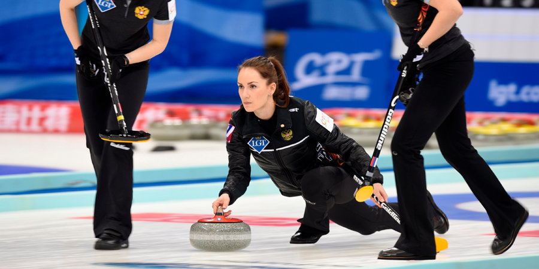

В финальном поединке российские керлингистки уступили национальной сборной Швейцарии со счетом 2:4. В составе сборной России выступают скип Алена Ковалева, вице-скип Юлия Портунова, Галина Арсенькина, Екатерина Кузьмина и Мария Комарова.
Официальный сайт Национальной хоккейной лиги поместил российского форварда "Миннесоты" Кирилла Капризова в список главных претендентов на титул лучшего новичка сезона. Эксперты НХЛ оценили вклад 24-летнего россиянина в игру команды, отметив, что именно благодаря его усилиям "Дикари" поборются за Кубок Стэнли.